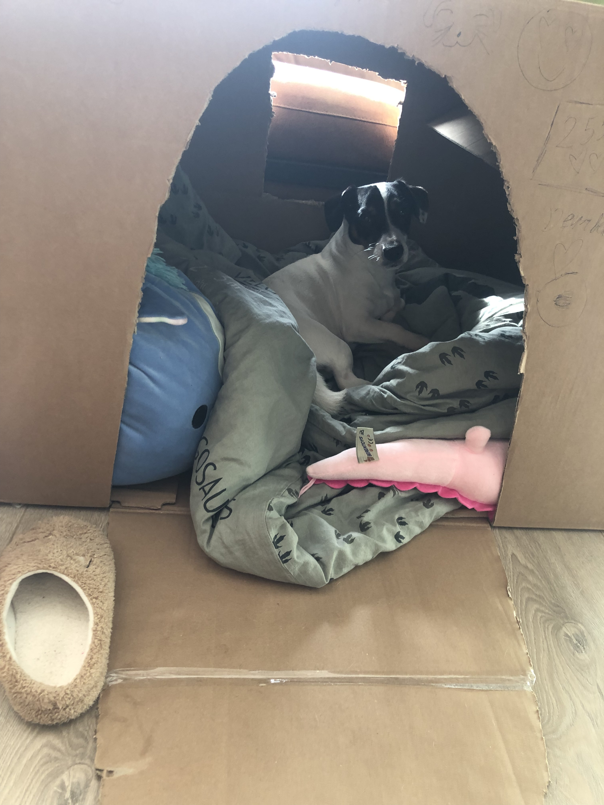
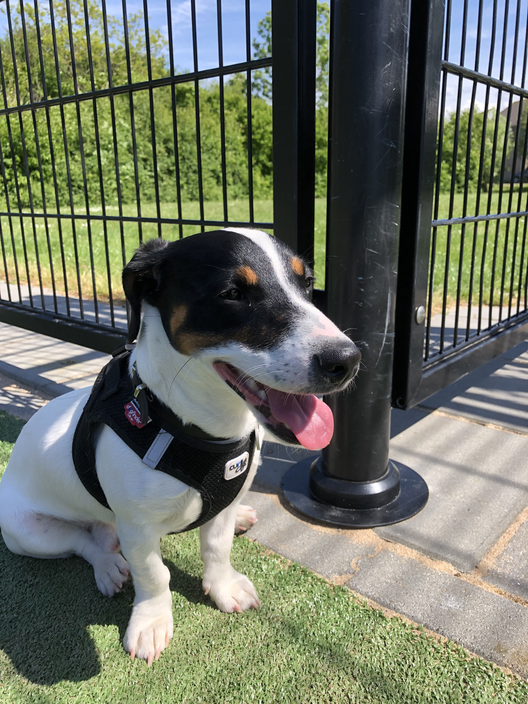
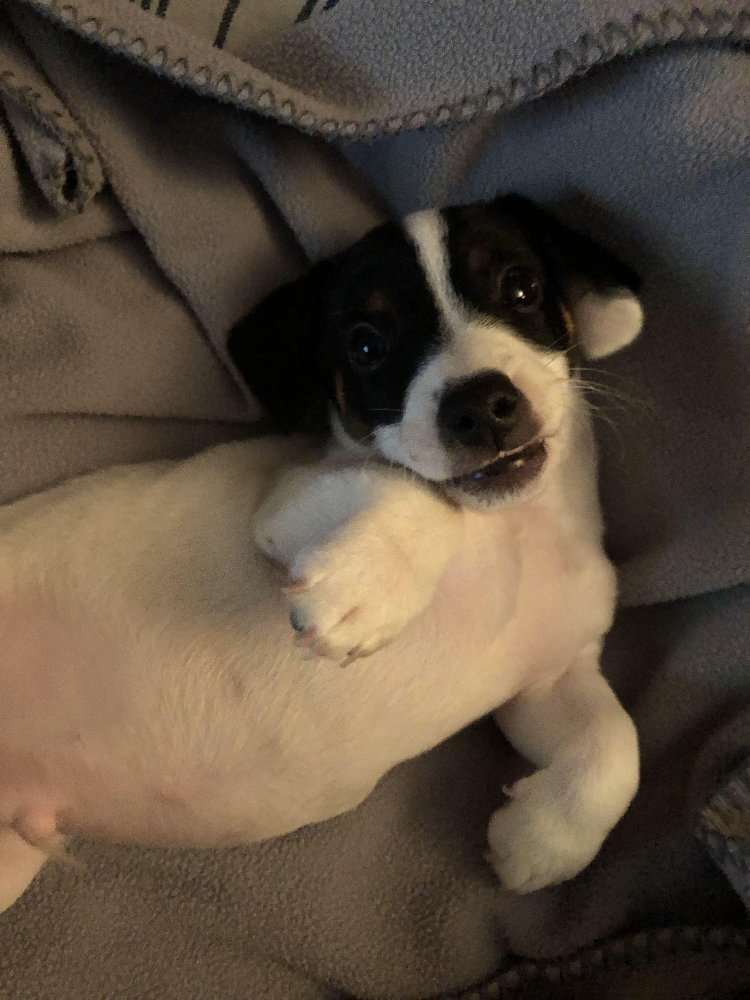

- 
- 
- 
Ik heb een hond die Jacky heet, en hij is nu vier jaar oud. Jacky is een Jack Russell, maar gedraagt zich niet altijd zoals je zou verwachten van zo'n ras.
Hij is namelijk best wel een luilak. Vaak ligt hij languit op de bank te slapen, alsof hij de hele dag heeft gewerkt.
Toch kan hij ook heel speels zijn. Als hij eenmaal wakker is, rent hij door het huis met zijn favoriete speeltje of daagt die mij uit om met hem te spelen
Buiten vindt hij het leuk om achter een bal aan te rennen, maar meestal stopt hij snel om weer te rusten.
Ondanks zijn luie kant is Jacky een superlief en vrolijk huisdier. Hij maakt elke dag gezelliger en ik kan me geen leven zonder hem voorstellen.